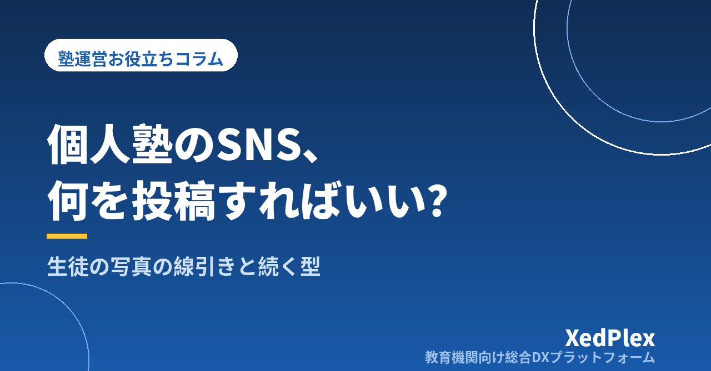

個人塾のSNS・Instagram運用、何を投稿すればいい？｜生徒の写真の線引きと、無理なく続く投稿の型

「SNSくらいはやっておいたほうがいい」と言われてInstagramのアカウントを作ったものの、最初の数週間で投稿が止まってしまった。何を載せればいいのか分からないし、生徒の写真を出していいのかも迷う。授業と事務で手一杯なのに、投稿のネタを考える時間まではとても取れない──個人塾の塾長から、よく聞く悩みです。
SNSが続かない原因は、センスや根気の問題ではありません。「何のためにやるのか」「何を載せて、何を載せないのか」が決まらないまま始めていることがほとんどです。この記事では、個人塾がSNSを無理なく続けるために、役割の決め方、投稿ネタの考え方、生徒の写真や個人情報の線引き、週1回でも回る運用の型、問い合わせにつなげる導線を順に整理します。
個人塾のSNSが続かない・効果が見えない3つの理由
まず、よくあるつまずき方を確認しておきます。
- 目的が「フォロワーを増やす」になっている：塾の商圏は通える範囲に限られます。遠方のフォロワーが増えても入塾にはつながらず、数字が伸びないことで意欲が下がります。
- 毎回ネタをゼロから考えている：投稿のたびに「今日は何を書こう」と考えると、忙しい週から止まります。
- 載せていい・いけないの基準がない：生徒の写真や成績の話をどこまで出していいか迷うたびに手が止まり、結果として何も投稿しなくなります。
この3つは、どれも「最初に決めておけば迷わない」ものです。逆に言えば、決めごとさえ作ってしまえば、SNSは塾長ひとりでも十分に続けられます。
まず決める：SNSの役割は「信頼の裏付け」
個人塾にとってSNSは、それ単体で生徒を集める道具というより、ほかの経路で塾を知った保護者が「どんな塾だろう」と確かめに来る場所と考えると、やるべきことがはっきりします。チラシを見た、知り合いから聞いた、地図アプリで見つけた──そのあと保護者が名前で検索したとき、更新が止まったアカウントより、教室の様子や塾長の考え方が伝わるアカウントのほうが安心感を与えます。
| 塾を知ったきっかけ | 保護者が次に確かめたいこと | SNSが補えること |
|---|---|---|
| チラシ・看板 | 実際の教室の雰囲気、塾長の人柄 | 教室の様子、塾長の言葉での発信 |
| 知人からの紹介 | 「聞いた話」が本当か | 日々の指導の様子、行事やお知らせ |
| 地図アプリ・検索 | 今も活動しているか、どんな方針か | 直近の更新、指導の考え方 |
こう位置づけると、目指すのは「バズる投稿」ではなく、見に来た人が安心できる状態を保つことになります。紹介の仕組みづくりは生徒を紹介・口コミで増やす仕組み、地図アプリでの見つけてもらい方はGoogleビジネスプロフィールの整え方で詳しく整理しています。
投稿ネタは「塾の日常」から5つに分類する
ネタ切れを防ぐコツは、投稿テーマをあらかじめ分類しておき、順番に回すことです。個人塾なら、次の5分類でほぼ足ります。
| 分類 | 投稿の例 |
|---|---|
| 1. 教室の様子 | 自習室の風景（生徒が写らない角度）、新しく入れた教材や本棚、季節の掲示物 |
| 2. 指導の考え方 | 宿題の出し方で大事にしていること、テスト前の過ごし方についての塾長の考え |
| 3. 学習のヒント | 定期テスト2週間前にやること、英単語の覚え方など、保護者や生徒の役に立つ小ネタ |
| 4. お知らせ | 季節講習の案内、体験授業の受付、休講日、満席・空き状況 |
| 5. 塾長・講師の人柄 | 塾を始めた理由、休日に読んだ本、教室の近くで見つけた季節の風景 |
特に効くのは2の「指導の考え方」です。同じ地域にいくつも塾がある中で、保護者が知りたいのは「この先生は子どもにどう接するのか」です。授業後に生徒とのやり取りで感じたことを、個人が特定されない形で一言書くだけでも、立派な投稿になります。
月初に5分類を4週分の表に割り当てておけば、「今週は何を書くか」で悩む時間がなくなります。季節講習や定期テストの時期は、年間事務カレンダーと合わせて決めておくと、告知の出し遅れも防げます。
生徒の写真・個人情報はどこまで載せる？線引きの決め方
塾のSNSでいちばん慎重になるべきなのが、生徒に関わる情報です。一度インターネットに出た写真や情報は、削除しても保存・転載されている可能性があります。「迷ったら載せない」を原則に、次のような基準を先に決めておきましょう。
| 情報 | 基準の例 |
|---|---|
| 顔が分かる写真 | 原則載せない。載せる場合は本人と保護者の書面での同意を得て、同意の範囲・期間を記録する |
| 後ろ姿・手元の写真 | 制服・名札・持ち物の学校名・ノートの名前が写っていないか確認してから載せる |
| 名前・学校名・学年 | 個人が特定される組み合わせは載せない（「〇〇中2年のAさん」なども避ける） |
| 成績・点数の話 | 個人を特定できる形では出さない。紹介する場合は本人・保護者の同意を得る |
| 合格実績・体験記 | 掲載の同意を事前に取り、誤解を招かない表記にする |
| 位置情報・撮影時刻 | 教室外の写真や、生徒が在室している時間帯がリアルタイムで分かる投稿は控える |
同意の取り方は、入塾時の申込書に「SNS・ホームページへの写真掲載の可否」の欄を設けておくと、毎回確認する手間が減ります。ただし、入塾時の同意だけに頼らず、実際に載せる前に「この写真を使ってもいいですか」と一声かけるほうが、トラブルを確実に避けられます。合格実績の扱いは合格体験記・合格実績の集め方と載せ方、生徒情報の管理全般は生徒の個人情報管理の基本もあわせて確認してください。
肖像権や個人情報の取り扱いは、ケースによって判断が分かれることがあります。ここで挙げた基準は運用上の一般的な目安です。同意書の文面や判断に迷う事例については、弁護士や個人情報保護委員会などの公的な相談窓口に確認することをおすすめします。
週1回でも回る運用の型
SNSは「たくさん投稿する」より「止めない」ことのほうが大切です。個人塾なら、週1〜2回の投稿で十分です。続けるための型を、次のように決めておきます。
- 月初に15分でネタ表を作る：前述の5分類を4週分に割り当て、その月の講習やテスト日程などのお知らせを書き込みます。
- 撮影は「授業後の5分」に決める：生徒が帰ったあとの教室、黒板の板書（生徒名が写っていないもの）、整えた自習席などを撮りためておきます。
- 投稿する曜日と時間を固定する：「毎週木曜の授業前」など、生活の中に組み込むと忘れにくくなります。予約投稿の機能を使えば、まとめて準備しておくこともできます。
- 講師に任せる場合は確認者を決める：アルバイト講師が投稿する場合は、公開前に塾長が写真と文章を確認するルールにします。
- DMの扱いを決める：SNSのメッセージで入塾相談や欠席連絡を受けると、情報が散らばり対応漏れの原因になります。プロフィールに「お問い合わせはホームページのフォームまたはお電話で」と明記し、DMは窓口案内にとどめるのがおすすめです。
特に5番目は見落とされがちです。SNSのDM、個人LINE、電話、メールと窓口が増えるほど、塾長が把握すべき場所が増えていきます。連絡窓口の整理については保護者連絡の手段の整理と使い分けや時間外の保護者連絡のルールでも触れています。
問い合わせにつなげる導線と、月1回の振り返り
SNSを見て興味を持った保護者が、次にどこへ進めばいいのかを用意しておかないと、せっかくの関心が流れてしまいます。最低限、次の3つを整えておきましょう。
- プロフィール欄：対象学年、指導形態（個別・少人数など）、教室の最寄り駅や地域名、問い合わせ方法を書きます。
- ホームページへのリンク：料金、時間割、体験授業の申し込み方法など、SNSでは伝えきれない情報をまとめた受け皿を用意します。載せる内容は個人塾のホームページに載せるべき情報を参考にしてください。
- 体験授業の案内：お知らせ投稿の最後に、申し込み方法を毎回同じ文面で添えます。体験から入塾までの流れは体験授業から入塾への導線で整理しています。
効果の確認は、フォロワー数より「問い合わせのきっかけ」を見るほうが実態に近づきます。問い合わせや体験授業の申し込み時に「何でお知りになりましたか」と聞き、SNSを見たという声があったかを月1回確認するだけで十分です。チラシや紹介など、ほかの集客経路と並べて見ると、どこに力を入れるべきかが見えてきます。毎月の数字の見方は塾長が毎月見るべき5つの数字、チラシの見直しはチラシの反応がないときに見直す点も参考にしてください。
まとめ
個人塾のSNSは、フォロワーを集めるための場所ではなく、塾を知った保護者が安心して問い合わせできるようにする「信頼の裏付け」と考えると、無理なく続けられます。投稿ネタは5分類で回し、生徒の写真や個人情報は「迷ったら載せない」を原則に基準を決める。投稿は週1回でも止めないことを優先し、DMは窓口案内にとどめて、問い合わせはホームページや電話に集める。まずは今月、5分類のネタ表を1枚作るところから始めてみてください。
この記事を書いた運営より
SNSで関心を持ってくれた保護者を受け止めるのは、塾の情報がまとまったホームページと、入塾後の日々の安心です。私たちは、個人経営・小規模の学習塾向けに、生徒管理・QRコードでの入退室記録・月次請求・保護者へのLINE/メール通知・AIによる学習支援までをひとつにまとめた教育機関向け総合DXプラットフォーム「XedPlex（ゼドプレックス）」を開発・提供しています。初期費用は0円、料金は生徒1名あたり月額300円（税込）から。生徒50名の塾なら月15,000円（税込）です。全国8つの教室で導入されており、導入塾には紹介ホームページの無料作成も行っています。機能の詳細説明はこちら。
XedPlexの詳細を見る